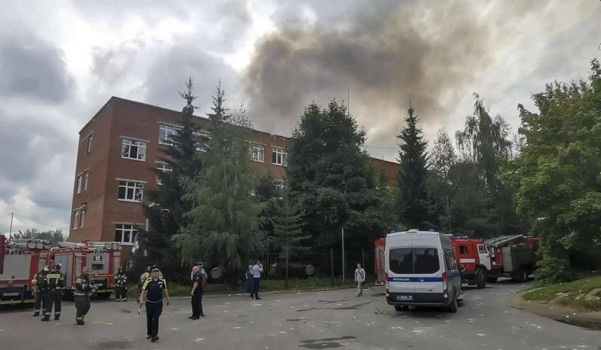

Large explosion rocks factory, creates mushroom-like cloud near Moscow; dozens injuredA large explosion at a factory in a city near Moscow sent a massive mushroom-shaped plume of smoke into the sky Wednesday, according to initial reports that said the blast blew out the windows of several nearby houses. International news outlets reported that at least 45 people were injured by the explosion, the cause of which was not immediately clear. Russia’s state news agency TASS reported that the blast occurred in the area of the boiler house of the Zagorsk optical-mechanical plant in the Sergiyev district near Moscow. The district is northeast of the Russian capital. Citing an unnamed source, TASS reported that “according to preliminary data, the cause of the explosion was not a drone.” Russia’s federal investigative agency said it launched a criminal probe, according to NBC News, which reported that the agency cited a “violation of industrial safety requirements for hazardous production facilities” but said it was trying to establish the cause of the blast. Videos geolocated by NBC News show a huge mushroom of smoke rising over the factory in Sergiyev. One taken by nearby residents and posted to social media shows the moment a huge, fiery blast takes place behind a car park, the network reported. The development came hours after Russian officials claimed to have shot down two Ukrainian drones aimed at Moscow overnight. The drones were intercepted on their approach to Moscow and there were no casualties, Moscow Mayor Sergei Sobyanin said. One of the drones came down in the Domodedovo district south of Moscow and the other fell near the Minsk highway, west of the city, according to Mr. Sobyanin. • This story is based in part on wire service reports. Please read our comment policy before commenting. |
 |